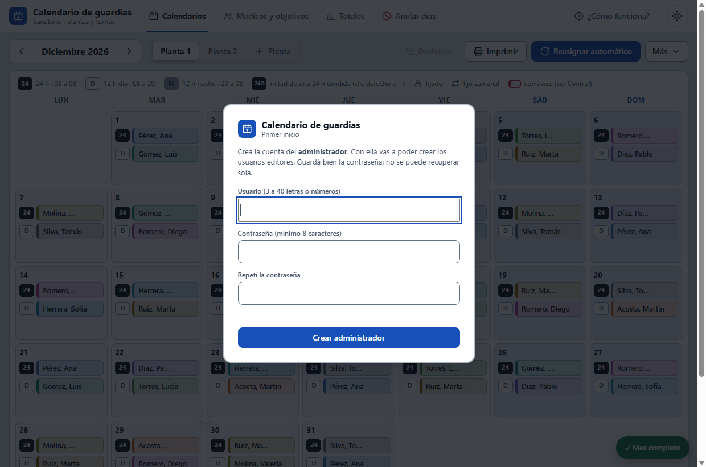

| Quiero… | Qué hago |
|---|---|
| Abrir el calendario | Doble clic en el ícono «Calendario de guardias» del Escritorio. |
| Actualizar a una versión nueva | Si hay una versión nueva, el administrador ve un aviso azul en el programa (o toca Administración → Buscar actualización). Después: Ejecutá el archivo nuevo que te manden, igual que la primera vez (cerrá el calendario antes). No se pierde nada: se conservan los médicos, las guardias y los usuarios, y además el instalador guarda una copia de seguridad antes de actualizar. La versión instalada se ve en Administración → Mi cuenta. |
| Desinstalar | Inicio → Configuración → Aplicaciones → Calendario de guardias → Desinstalar. Los datos no se borran: quedan guardados por si lo volvés a instalar. |
| Ver estas guías de nuevo | Quedan instaladas con el programa: en el Menú Inicio → Calendario de guardias → «Guía de uso» y «Guía de instalación», o dentro del programa con ¿Cómo funciona? (arriba). |
| Dónde se guardan los datos | En esta computadora, en la carpeta del programa. Se hace una copia de seguridad automática por día. No usa internet ni servidores externos. |